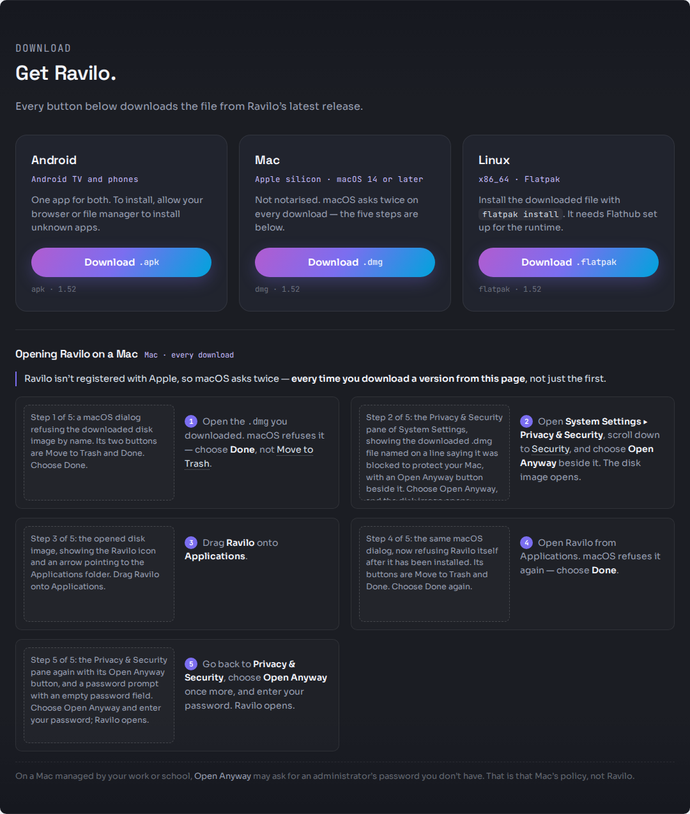
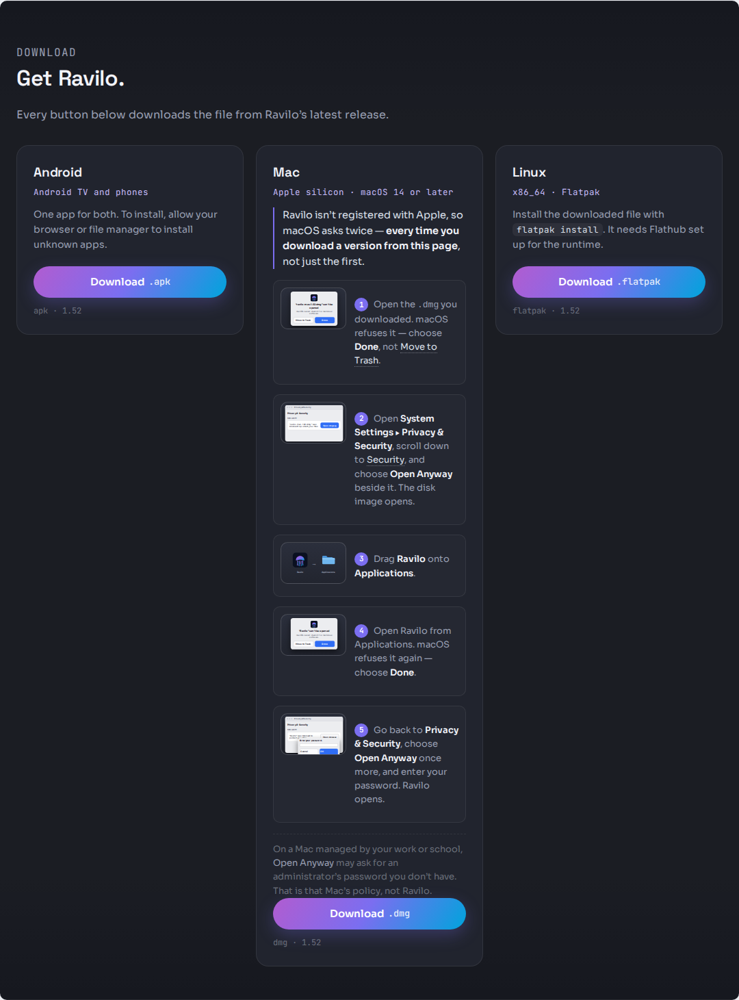
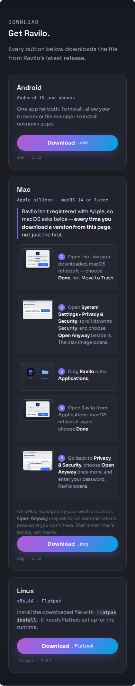
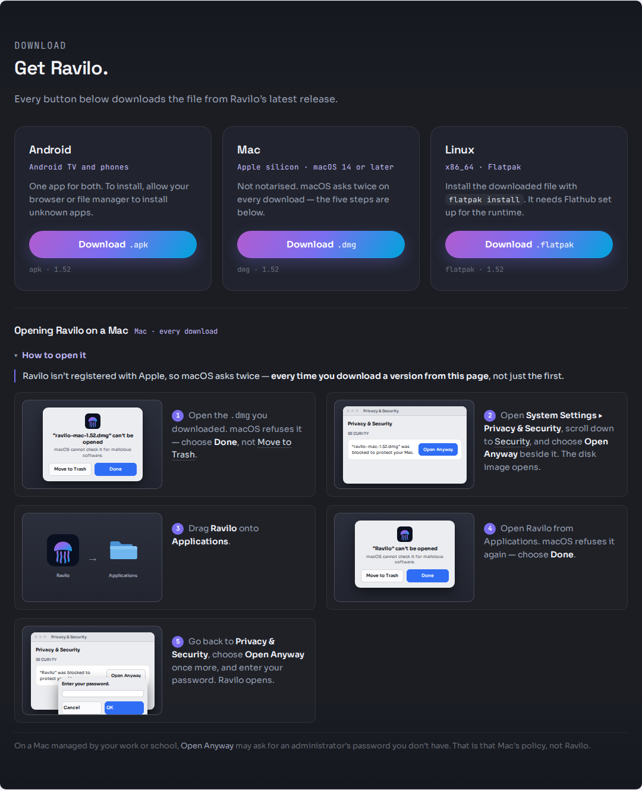
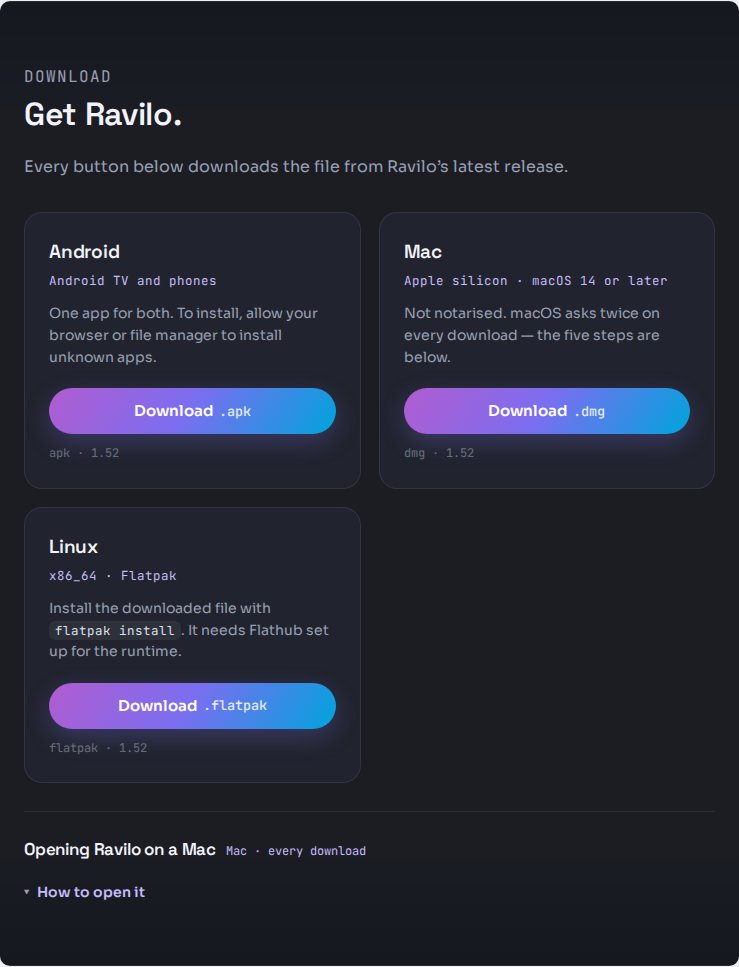
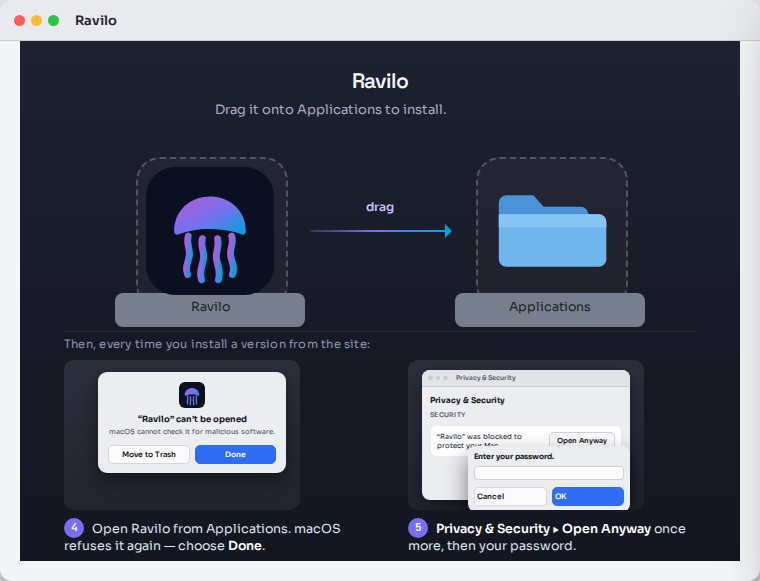

Two surfaces: the Mac card on the public download page, and the window the disk image opens to.
Ravilo for Mac is signed with our own certificate and is not registered with Apple, so macOS refuses every hand-downloaded copy twice — the disk image when it is opened, and then the installed app. Each refusal is a dialog whose buttons are Move to Trash and Done, and the only way past either is System Settings ▸ Privacy & Security ▸ Open Anyway. The second approval also asks for the user's password. Today the page names one of those steps, calls it "the first time", and says it in text — so the button it names stays invisible.
#16181f, no light theme — and keeps its existing style.repeat(auto-fit, minmax(260px, 1fr)).
Anything that makes the Mac card much taller than Android and Linux drags that row with it.xattr, spctl, or turning Gatekeeper off. There is one correct
route and it is Open Anyway.Handle: A · The strip below the download grid
The Mac card keeps its one-line note and its button. The five steps are a full-width strip under the three-card row, two steps per line, each picture at its full 236px design width. The three cards stay the same height as each other and the Download button stays where a returning visitor already expects it.

Handle: B · The strip inside the Mac card
This is what the spec's own sentence describes today — the card's one-line note becomes the strip. Drawn so the cost is visible rather than argued, and the cost is two things at once.


Handles: Toggle 1 · Always open, no control and Toggle 2 · Under a How to open it summary, open by default


Toggle 1 is recommended. Folded, the page says less than it does today: the one honest line it has now is replaced by a control that hides everything. The folded state is the whole argument — a reader who collapses it is exactly the reader about to meet the first refusal.
Handle: Window · Targets above, steps 4 and 5 beneath
Steps 1 and 2 are not drawn here: by the time this window is open they are behind the user. The window carries the drag (step 3) and then the two steps that have not happened yet — each with its own picture, at the same 236px design width the page uses, so this surface keeps the same promise the page does: every step has a picture and one short sentence. Laying them in two columns is what makes that fit; stacked rows would force a half-size picture, which is the unreadable smudge direction B was rejected for.

#777e8d, about 4.1:1 against white and 5.2:1 against near-black) and carries
nothing of ours. Everywhere else in the picture the text is ours, so its contrast is ours to choose.
| Finder window content area | 720 × 520 pt |
|---|---|
| Background image | 720 × 520 px at 1×, 1440 × 1040 px at 2× — one image pixel per point |
| Icon size | 128 pt |
| Ravilo icon centre | (190, 190) pt from the content area's top-left |
| Applications centre | (530, 190) pt from the content area's top-left |
| Label bands (do not cover) | 190 × 34 pt, centred on each icon's x, top edge at y = 252 pt |
A 128pt icon centred at y=190 ends at y=254, and Finder prints the label immediately beneath it — which is why the bands start at 252 and not lower. The window never exceeds 800 × 600 pt, so it opens whole on a 1280×800 screen with the title bar above it.
| A · below the grid | B · inside the card | |
|---|---|---|
| Picture width | 236px — the dialog and the settings pane are readable | 96px — both are unreadable |
| The card row | Three cards stay equal height | Mac card ~5× the others |
| Download button | Stays where it is today | Pushed ~1 200px down the page |
| Steps next to the button | One section below — the weakest point of A | In the same card as the button |
| Phone | Full-width pictures, one step per row | Still 96px pictures |
| Matches the spec's current sentence | No — needs a dated amendment | Yes, as written |
A is recommended, and the one thing it gives up is honest: the steps sit a section below the button they belong to. A's heading and the Mac card's note are written to close that gap in words ("the five steps are below") rather than pretend it does not exist.
| State | Drawn? | Where |
|---|---|---|
| Page, desktop width, steps open | drawn | a-desktop |
| Page, phone width, steps open | drawn | a-phone |
| Page, steps collapsed | drawn | a-desktop-collapsed |
| Page, pictures failed to load | drawn | a-desktop-noimg, a-phone-noimg |
| Disk-image window, Light | drawn | dmg-window-light |
| Disk-image window, Dark | drawn | dmg-window-dark |
| The work-managed-Mac line | drawn | in every page frame, at the foot of the strip |
| Longest string, Danish | drawn | a-phone-da |
| Longest string, Faroese | drawn | a-phone-fo |
| Loading | folded in | the pictures-not-loading frames are the same picture |
| Empty | not applicable | a static page with no data to be empty of |
| Error | not applicable | nothing is fetched; there is nothing to fail |
| Offline | not applicable | once the page is loaded it needs nothing further |
| 10-foot focus | not applicable | no TV surface is in this round |
| # | Choice | Recommendation |
|---|---|---|
| 1 | Toggle, or no toggle | No toggle — folded, the page says less than it does today |
| 2 | The shape of one step | Picture + sentence, two per row on desktop, one per row on phone. Five across cannot survive 390px, and a settings pane at a fifth of a phone is a smudge |
| 3 | Where the strip lives | Below the grid (A) — see the comparison. This one changes the spec's wording and needs a dated amendment |
| 4 | The disk-image window's layout | Targets above, steps 4 and 5 beneath — it reads top-to-bottom in the order the reader meets it |
English ships. Danish and Faroese are drafts, carried so the longest-string frames use real words — not a request to translate the page.
| Key | English | Dansk | Føroyskt |
|---|---|---|---|
| lead | Ravilo isn't registered with Apple, so macOS asks twice — every time you download a version from this page, not just the first. | Ravilo er ikke registreret hos Apple, så macOS spørger to gange — hver gang du henter en version fra denne side, ikke kun første gang. | Ravilo er ikki skrásett hjá Apple, so macOS spyr tvær ferðir — hvørja ferð tú heintar eina útgávu frá hesi síðu, ikki bert fyrstu ferð. |
| step1 | Open the .dmg you downloaded. macOS refuses it — choose Done, not Move to Trash. |
Åbn den .dmg, du har hentet. macOS afviser den — vælg Done, ikke Move to Trash. |
Lat ta .dmg, tú heintaði, upp. macOS noktar hana — vel Done, ikki Move to Trash. |
| step2 | Open System Settings ▸ Privacy & Security, scroll down to Security, and choose Open Anyway beside it. The disk image opens. | Åbn Systemindstillinger ▸ Anonymitet & sikkerhed, rul ned til Sikkerhed, og vælg Open Anyway ud for den. Diskbilledet åbner. | Lat System Settings ▸ Privacy & Security upp, rulla niður til Security, og vel Open Anyway við hana. Diskmyndin letur upp. |
| step3 | Drag Ravilo onto Applications. | Træk Ravilo over på Applications. | Drag Ravilo yvir á Applications. |
| step4 | Open Ravilo from Applications. macOS refuses it again — choose Done. | Åbn Ravilo fra Programmer. macOS afviser den igen — vælg Done. | Lat Ravilo upp úr Applications. macOS noktar hana aftur — vel Done. |
| step5 | Go back to Privacy & Security, choose Open Anyway once more, and enter your password. Ravilo opens. | Gå tilbage til Anonymitet & sikkerhed, vælg Open Anyway igen, og indtast din adgangskode. Ravilo åbner. | Far aftur í Privacy & Security, vel Open Anyway aftur, og skriva loyniorðið hjá tær. Ravilo letur upp. |
| managed | On a Mac managed by your work or school, Open Anyway may ask for an administrator's password you don't have. That is that Mac's policy, not Ravilo. | På en Mac, der styres af dit arbejde eller din skole, kan Open Anyway bede om en administratoradgangskode, du ikke har. Det er den Macs politik, ikke Ravilo. | Á eini Mac, sum arbeiðið ella skúlin stýrir, kann Open Anyway biðja um eitt umsitaraloyniorð, sum tú ikki hevur. Tað er politikkurin hjá teirri Mac, ikki Ravilo. |
| toggle | How to open it | Sådan åbner du den | Soleiðis letur tú hana upp |
| striphead | Opening Ravilo on a Mac | — | — |
| macnote | Not notarised. macOS asks twice on every download — the five steps are below. | — | — |
| dmg.head | Ravilo / Drag it onto Applications to install. | — | — |
| dmg.after | Then, every time you install a version from the site: | — | — |
| dmg.step4 | Open Ravilo from Applications. macOS refuses it again — choose Done. | — | — |
| dmg.step5 | Privacy & Security ▸ Open Anyway once more, then your password. | — | — |
Every picture carries the whole instruction, so the page still works with no pictures at all — which is the state drawn in a-desktop-noimg rather than asserted here.
The walk recorded the button names and the Privacy & Security line. It did not record the dialog's title or body, so these are placed, flagged, and cheap to change: they live in one object in mac-open-anyway.js, not in nine frames.
| Where | Drawn as | Status |
|---|---|---|
| Refusal dialog, title — steps 1–2 | “ravilo-mac-1.52.dmg” can't be opened | working copy — not recorded on the walk |
| Refusal dialog, title — steps 4–5 | “Ravilo” can't be opened | working copy — not recorded on the walk |
| Refusal dialog, body | macOS cannot check it for malicious software. | working copy — not recorded on the walk |
| Password prompt, title | Enter your password. | working copy — not recorded on the walk |
| Privacy & Security line | “ravilo-mac-1.52.dmg” / “Ravilo” was blocked to protect your Mac. | working copy — from the brief, still unconfirmed. The subject differs by step: the disk image in 1–2, the app in 4–5 |
| Buttons: Move to Trash · Done · Open Anyway | as drawn | recorded on the walk |
If the real wording differs, the copy changes and none of the layout does.